Cara Host PHP dan MySQL dengan Azure
Author : Billy
Last Updated : 13 Desember 2017
Azure memiliki banyak sekali feature salah satunya adalah hosting website menggunakan bahasa PHP sebagai bahasa
servernya dan MySQL sebagai databasenya. Berikut ini adalah tutorial hosting website PHP dan MySQL menggunakan Azure.
1.Masuk ke Portal Azure
2. Untuk Menggunakan layanan azure yang kita inginkan pertama kali kita harus mengaktifkan paket layanan terlebih dahulu. Klik New pada bagian kiri layar lalu ketikkan "Web App + MySQL"

3. Setelah memilih "Web App + MySQL", klik create.

4. Lalu masukkan data-data yang diperlukan seperti contoh dibawah, lalu klik create

5. Tunggu hingga resource selesai dibuat

6. Setelah resource selesai disiapkan maka hosting sudah siap digunakan.
Setelah itu kita bisa memulai menyiapkan database MySQL dan menghubungkan PHP yang akan kita masukkan ke azure dengan MySQL dyang suda ada di azure.

2. Setelah itu kita akan diarahkan ke phpMyAdmin ,kita bisa mulai mengolah database.
3. Buat Tabel yang akan ditampilkan oleh php. Kalian bebas membuat tabel dengan isi data apa saja, namu jika kalian hanya ingin mencoba kalian bisa mencontoh data tabel dibawah.

4. Jika berhasil maka tampilan tabel akan terlihat seperti dibawah ini.

5. Karena tujuan dari tutorial ini hanya untuk menunjukkan cara menampilkan data dari MySQL ke PHP maka kita bisa langsung saja memasukkan data yang ditampilkan melalui phpMyAdmin melalui tab SQL seperti pada gambar dibawah.

6. Jika berhasil maka data yang ditampilkan akan mirip seperti ini.

2. Setelah WinSCP berhasil diinstall, kita bisa menggunakannya untuk memasukkan file ke azure. Namun sebelum itu, Kita perlu melihat data - data yang diperlukan untuk mengaksesnya. Klik Overview maka akan muncul tampilan seperti gambar dibawah.
A = url untuk mengakses website
B = username untuk mengakses FTP
C = hostname untuk mengakses FTP

3. Sebelum itu kita dapat mengecek terlebih dahulu apakah Service sudah berjalan dengan mengakses url pada kotak A yang sudah ditandai pada gambar diatas. Kira - kira tampilan awalnya akan seperti dibawah ini.

4. Setelah itu kita perlu password untuk mengakses FTP. Untuk mengakses password klik menu Deployment credentials dan atur password sesuai keinginan.

5. Setelah semua persiapan untuk mengakses selesai, buka WinSCP dan masukkan Hostname ,Username dan Password sesuai dengan data yang ada di Azure tadi. 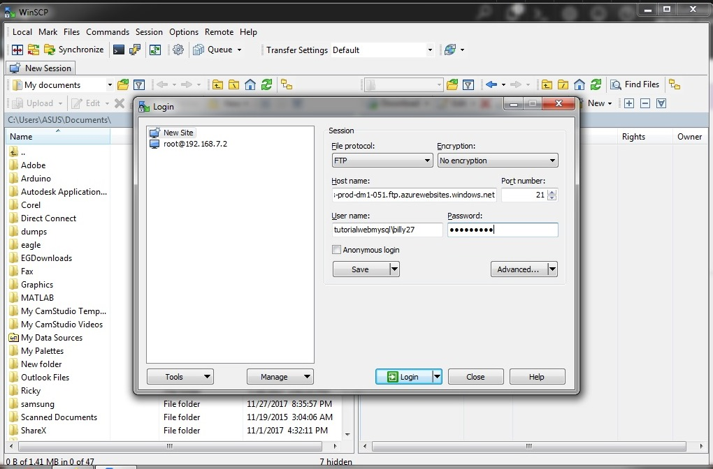
6. Jika berhasil maka tampilannya akan seperti pada gambar dibawah ini. 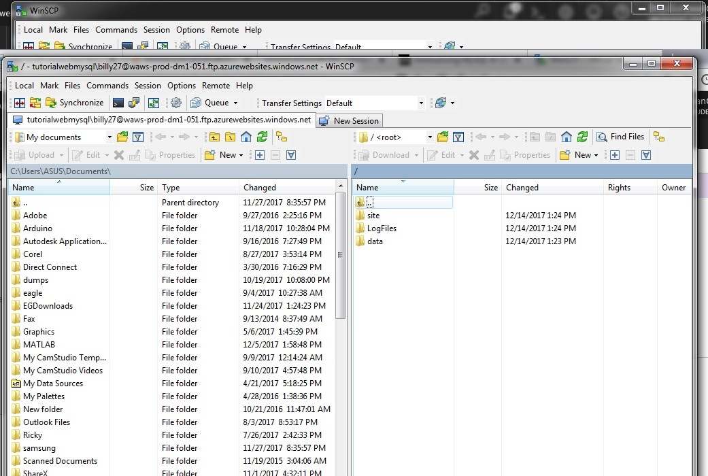
7. Arahkan direktori folder menuju /site/wwwroot/ 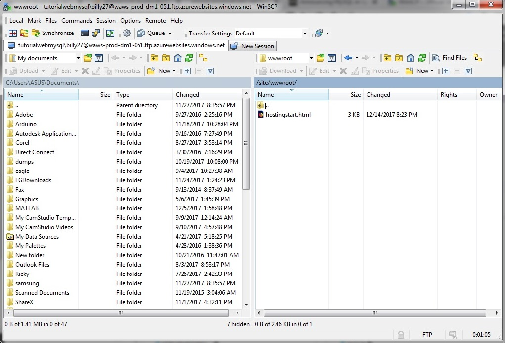
8. klik kanan , pilih New , pilih File buat file baru dan beri nama file.php 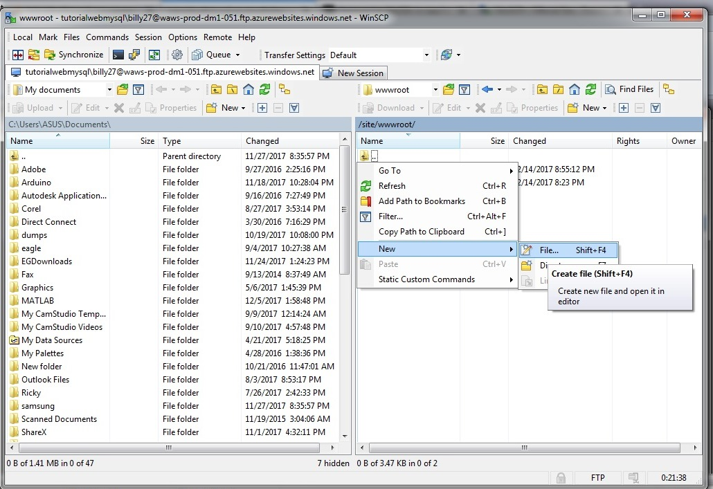
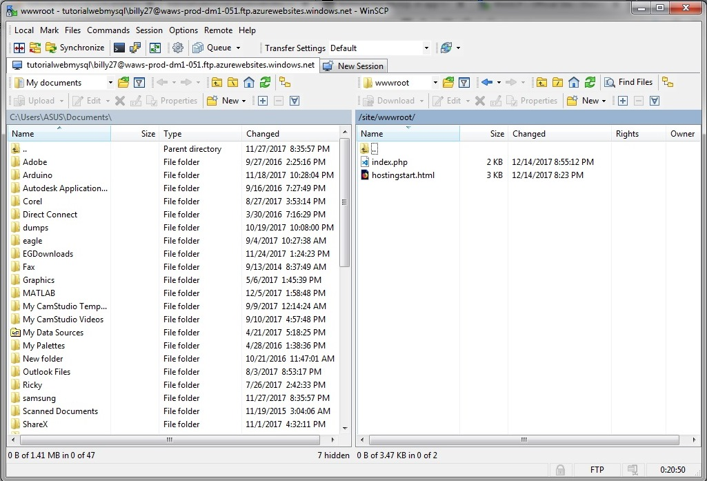
9. Tulis kode dibawah ini ke dalam index.php yang dibuat tadi. Kode ini berfungsi Untuk mengambil data dari "MYSQLCONNSTR_localdb" untuk mengambil data yang diperlukan untuk menghubungkan PHP ke mySQL setelah itu kita bisa menampilkan data dari database. 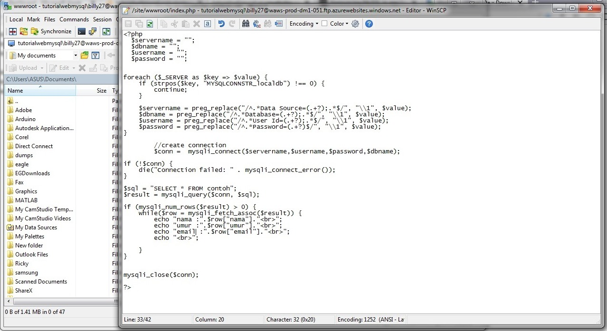
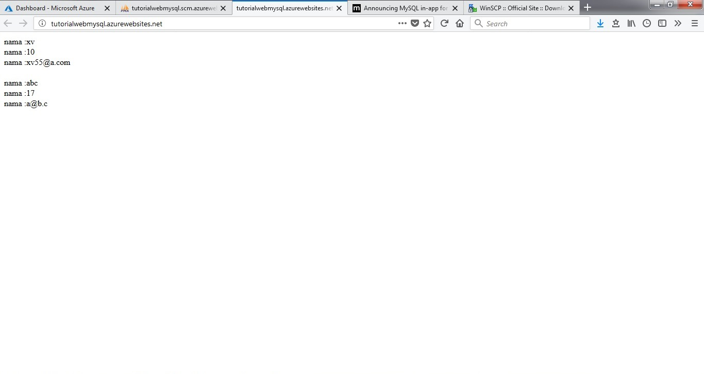
Sekian tutorial untuk hosting PHP dan MySQL dengan azure semoga bermanfaat
1.Masuk ke Portal Azure
2. Untuk Menggunakan layanan azure yang kita inginkan pertama kali kita harus mengaktifkan paket layanan terlebih dahulu. Klik New pada bagian kiri layar lalu ketikkan "Web App + MySQL"
3. Setelah memilih "Web App + MySQL", klik create.
4. Lalu masukkan data-data yang diperlukan seperti contoh dibawah, lalu klik create
5. Tunggu hingga resource selesai dibuat
6. Setelah resource selesai disiapkan maka hosting sudah siap digunakan.
Setelah itu kita bisa memulai menyiapkan database MySQL dan menghubungkan PHP yang akan kita masukkan ke azure dengan MySQL dyang suda ada di azure.
Menyiapkan database MySQL
Untuk tutorial ini kita akan membuat database yang sudah berisi data. Setelah itu kita akan memanggil data tersebut dengan PHP. Azure memiliki cara yang sedikit berbeda dalam hal menghubungkan PHP ke MySQL , Tutorial ini akan cara melakukannya di Azure. 1. Untuk mengakses phpMyAdmin di azure klik service yang kita buat tadi dan pilih MySQL In App. Pastikan MySQL In App pada mode ON. Lalu klik Manage pada pojok atas.2. Setelah itu kita akan diarahkan ke phpMyAdmin ,kita bisa mulai mengolah database.
3. Buat Tabel yang akan ditampilkan oleh php. Kalian bebas membuat tabel dengan isi data apa saja, namu jika kalian hanya ingin mencoba kalian bisa mencontoh data tabel dibawah.
4. Jika berhasil maka tampilan tabel akan terlihat seperti dibawah ini.
5. Karena tujuan dari tutorial ini hanya untuk menunjukkan cara menampilkan data dari MySQL ke PHP maka kita bisa langsung saja memasukkan data yang ditampilkan melalui phpMyAdmin melalui tab SQL seperti pada gambar dibawah.
6. Jika berhasil maka data yang ditampilkan akan mirip seperti ini.
Memasukkan file PHP ke Azure
Setelah Database siap maka langkah selanjutnya adalah memasukkan program PHP ke Azure. Ada banyak cara untuk memasukkan program ke azure. Salah satu cara yang saya akan gunakan adalah dengan menggunakan WinSCP. 1. Download WinSCP terlebih dahulu.2. Setelah WinSCP berhasil diinstall, kita bisa menggunakannya untuk memasukkan file ke azure. Namun sebelum itu, Kita perlu melihat data - data yang diperlukan untuk mengaksesnya. Klik Overview maka akan muncul tampilan seperti gambar dibawah.
A = url untuk mengakses website
B = username untuk mengakses FTP
C = hostname untuk mengakses FTP
3. Sebelum itu kita dapat mengecek terlebih dahulu apakah Service sudah berjalan dengan mengakses url pada kotak A yang sudah ditandai pada gambar diatas. Kira - kira tampilan awalnya akan seperti dibawah ini.
4. Setelah itu kita perlu password untuk mengakses FTP. Untuk mengakses password klik menu Deployment credentials dan atur password sesuai keinginan.
5. Setelah semua persiapan untuk mengakses selesai, buka WinSCP dan masukkan Hostname ,Username dan Password sesuai dengan data yang ada di Azure tadi. 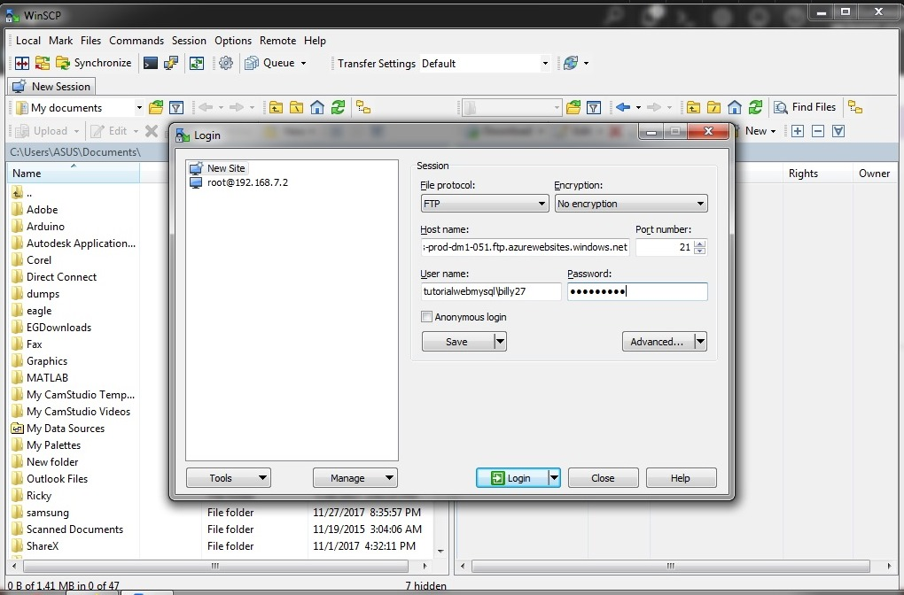
6. Jika berhasil maka tampilannya akan seperti pada gambar dibawah ini. 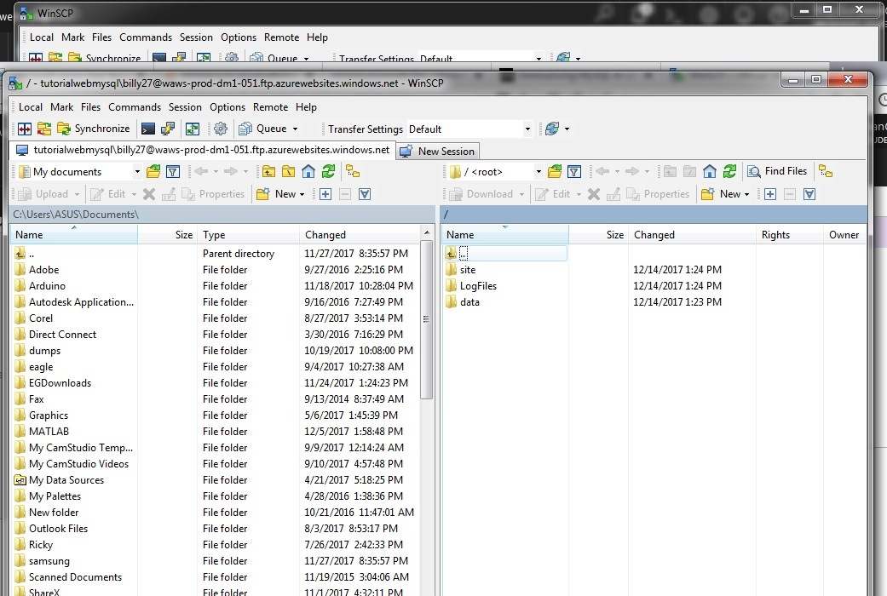
7. Arahkan direktori folder menuju /site/wwwroot/ 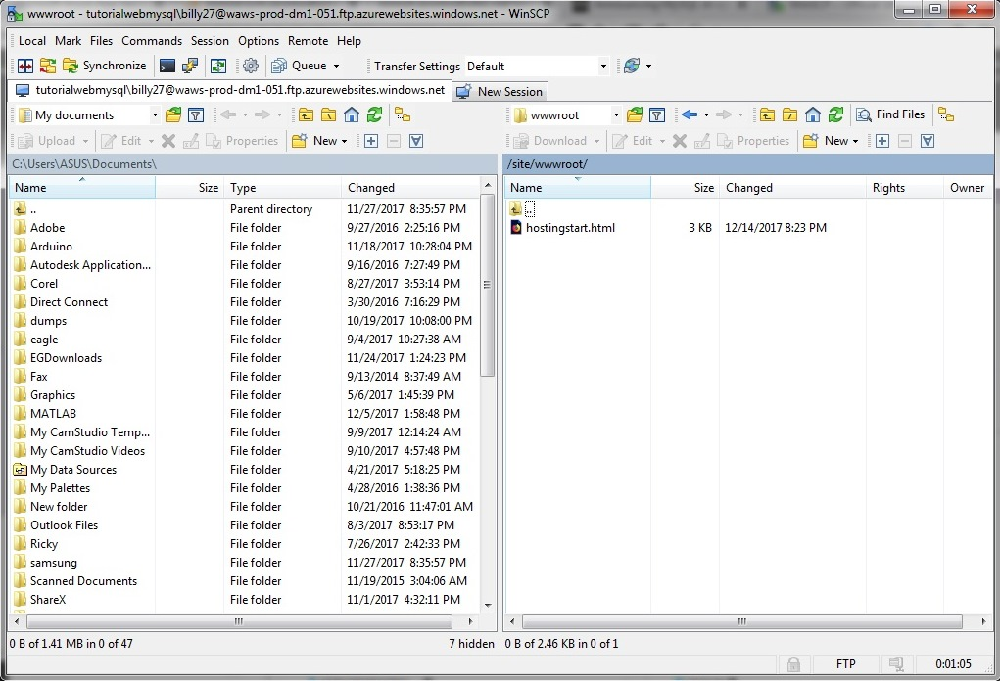
8. klik kanan , pilih New , pilih File buat file baru dan beri nama file.php 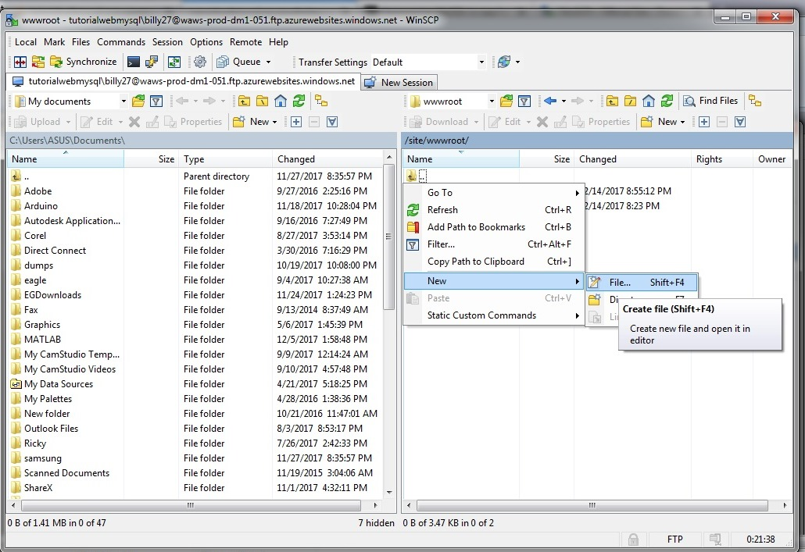
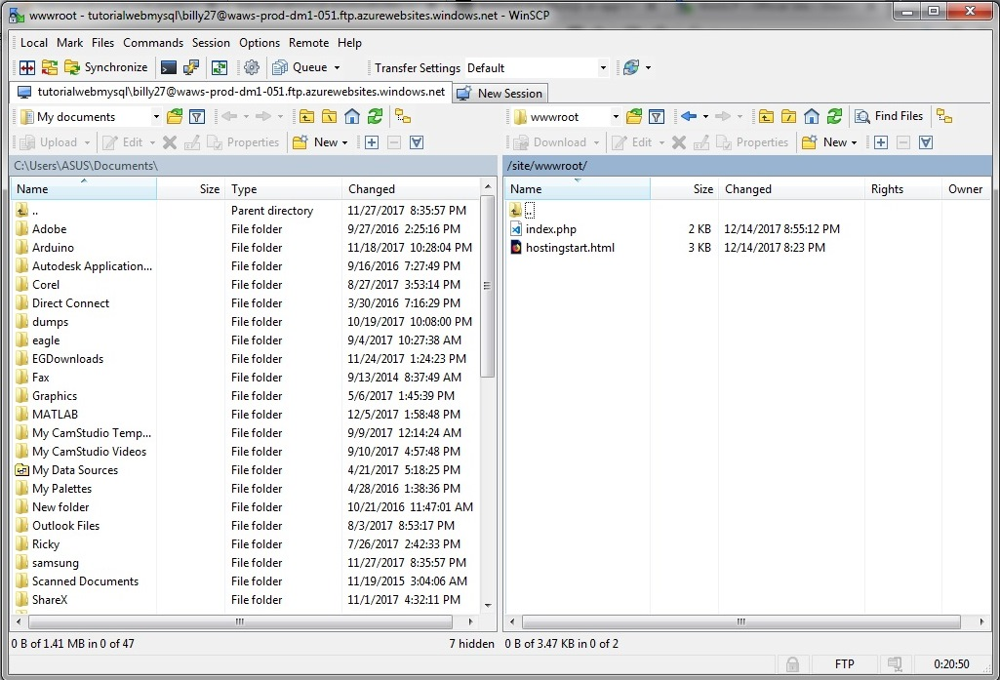
9. Tulis kode dibawah ini ke dalam index.php yang dibuat tadi. Kode ini berfungsi Untuk mengambil data dari "MYSQLCONNSTR_localdb" untuk mengambil data yang diperlukan untuk menghubungkan PHP ke mySQL setelah itu kita bisa menampilkan data dari database. 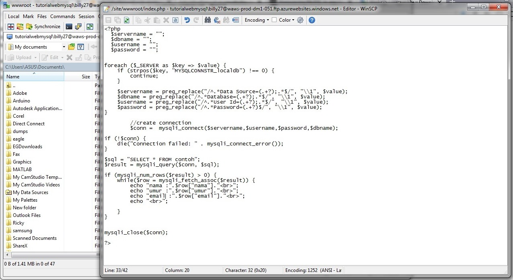
<?php
$servername = "";
$dbname = "";
$username = "";
$password = "";
foreach ($_SERVER as $key => $value) {
if (strpos($key, "MYSQLCONNSTR_localdb") !== 0) {
continue;
}
$servername = preg_replace("/^.*Data Source=(.+?);.*$/", "\1", $value);
$dbname = preg_replace("/^.*Database=(.+?);.*$/", "\1", $value);
$username = preg_replace("/^.*User Id=(.+?);.*$/", "\1", $value);
$password = preg_replace("/^.*Password=(.+?)$/", "\1", $value);
}
//create connection
$conn = mysqli_connect($servername,$username,$password,$dbname);
if (!$conn) {
die("Connection failed: " . mysqli_connect_error());
}
$sql = "SELECT * FROM contoh";
$result = mysqli_query($conn, $sql);
if (mysqli_num_rows($result) > 0) {
while($row = mysqli_fetch_assoc($result)) {
echo "nama :".$row["nama"]."<br>";
echo "umur :".$row["umur"]."<br>";
echo "email :".$row["email"]."<br>";
echo "<br>";
}
}
mysqli_close($conn);
?>
10. Akses url website yang sudah anda buat , maka bisa dilihat hasilnya akan seperti dibawah ini.
Jika berhasil maka data yang ada didatabase akan ditampilkan oleh website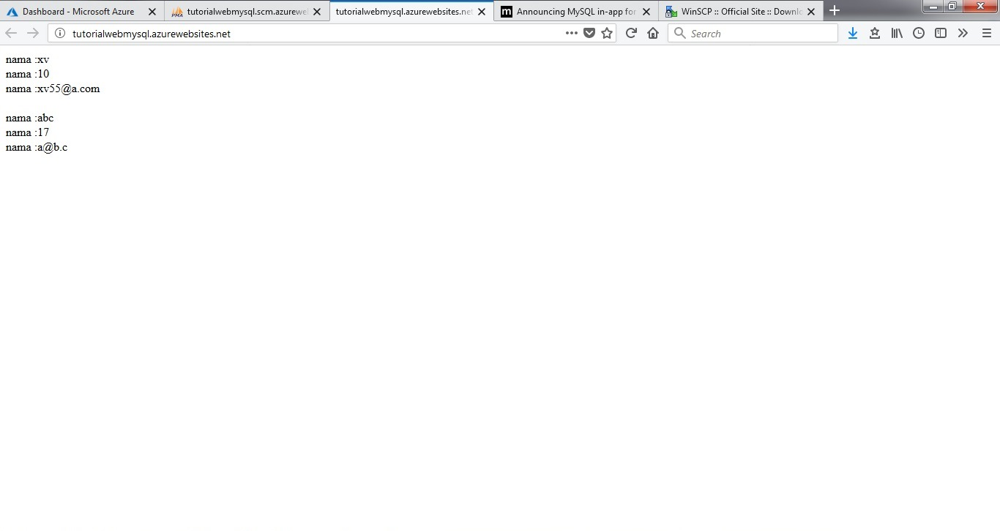
Sekian tutorial untuk hosting PHP dan MySQL dengan azure semoga bermanfaat